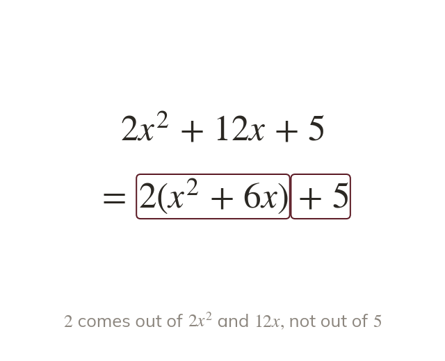
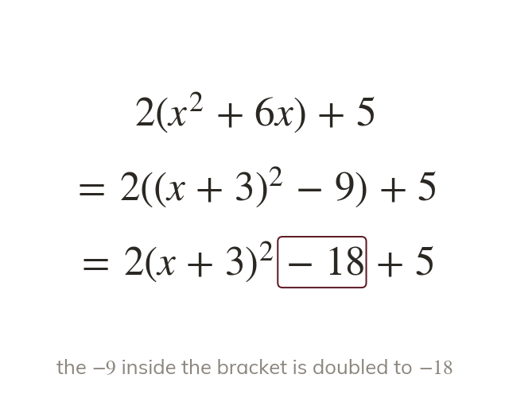
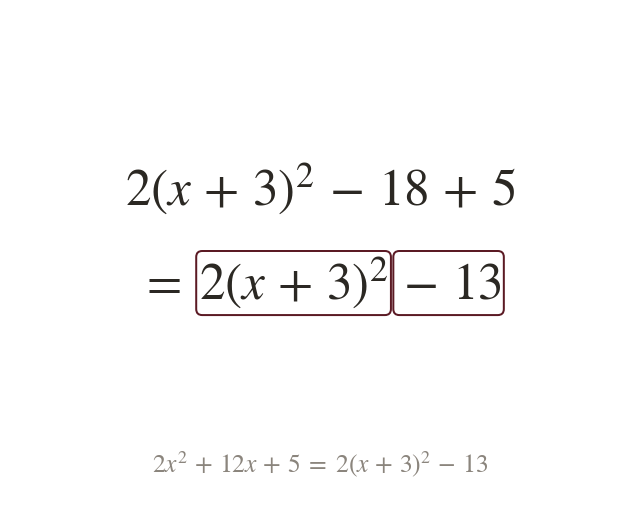
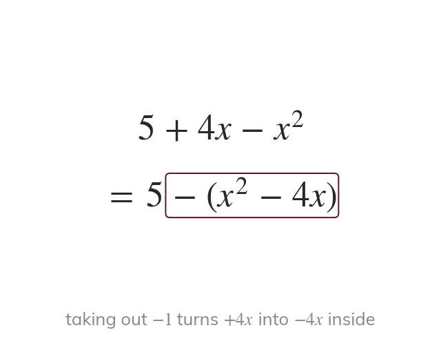
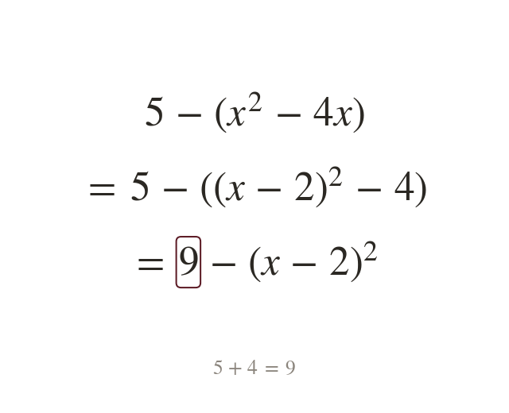

Take a out of the x terms
Factor a out of the and terms only. The constant waits outside the bracket.
Real curves often start with or not
Taking that number out first lets the same square-completing step work on any quadratic.
Work down the page at your own pace. Write every answer in your book first, then click to check it.
Read each card, then follow the worked examples one step at a time.

Factor a out of the and terms only. The constant waits outside the bracket.

The bracket is completed just as before. Then the subtracted square is multiplied by a.

The result has the form Here is is and is
Pick an answer. If it's wrong, the feedback tells you which mistake it was.
Read each card, then follow the worked examples one step at a time.

A negative term means taking out
Every sign inside the bracket then changes.

Inside, is
The minus in front turns that into
Pick an answer. If it's wrong, the feedback tells you which mistake it was.
Finished? Next lesson: 10H.15.3 Turning Points by Completing the Square.
Log in, then search for a code to practise that skill.
Videos, worksheets and more on each part of this lesson.